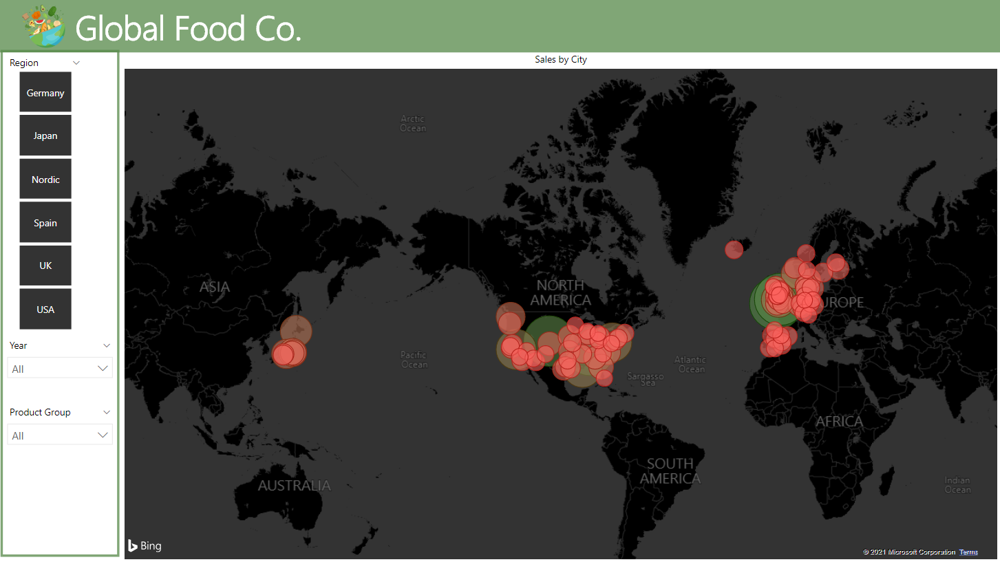

Global Foods Co.
An aptly named (imaginary) global food distribution company is looking for some insights into their sales and marketing, as they are looking for chances to expand and become.. well, more global.
Approach
Using data supplied in the form of excel spreadsheets, and the clients preferred delivery tool, Power BI. Power BI was able to handle most of the cleaning in the Query tool, and then arranged into a four dashboards to answer questions and display insights. The four dashboards were as follows;
- General Overview
- Product Details
- Customer Details
- Customer Location
Result
Using Power BI, questions like what the top selling product is in different regions, are there trends and/or seasonality. Other things that can be looked at are around strategy, and where potential markets can be found in the future.
The dashboards are displayed below, unfortunately in a static mode only. The strength of Power BI created dashboards are in their ease of use and interactivity, which unfortunately I cannot display here.
